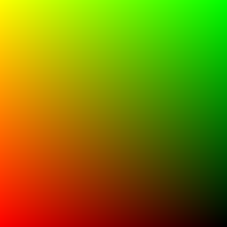
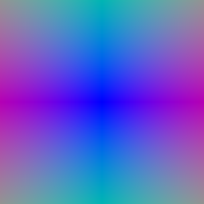
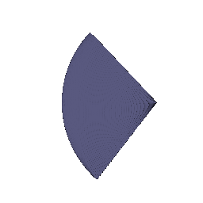
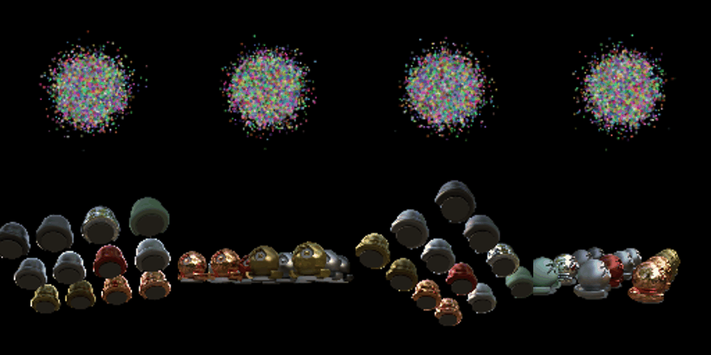
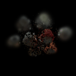
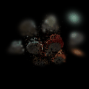

RGB Rendering

Depth

I generated image-space pixel coordinates in NDC and unprojected them through the camera to obtain world-space rays. Each ray starts at the camera center and uses a normalized direction toward the corresponding image-plane point.

vis_grid

vis_rays
For each ray, I uniformly sampled 64 points between the configured near and far depths. Each 3D sample is computed as the ray origin plus the sampled depth multiplied by the ray direction.

I implemented emission-absorption volume rendering. Density is converted to alpha, and each sample is weighted by its alpha and the accumulated transmittance from all previous samples. The same rendering weights are used for both RGB and depth.
I optimized the center and side lengths of the box using RGB supervision. I used mean squared error between predicted and ground-truth RGB values and optimized the box parameters using Adam for 1000 epochs.
Optimized Box Center: (0.25, 0.25, 0.00)
Optimized Box Side Lengths: (2.01, 1.50, 1.50)

I implemented a NeRF MLP that maps a 3D position to density and color. The 3D position is first encoded using positional encoding with 6 frequencies, which expands the 3D input to a 39-dimensional feature. The main MLP contains 6 layers with hidden dimension 128 and a skip connection at layer 3.
The density head uses a ReLU activation so the predicted density is non-negative. The color head uses a Sigmoid activation to constrain RGB values to [0, 1]. View direction is not used in Part 3, so both density and color depend only on 3D position.
I trained the model for 250 epochs using 128 samples per ray on 128 x 128 images. The loss is mean squared error between the rendered image and the ground-truth RGB image.

I extended the Part 3 NeRF by conditioning only the color prediction on viewing direction. The normalized ray direction is encoded using 2 positional-encoding frequencies and concatenated with the intermediate feature before the final color layers. The density branch remains view-independent because geometry should not change with viewing direction.


What is the trade-off between increased view dependence and generalization quality?
Adding viewing direction allows the model to represent effects such as reflections and specular highlights whose appearance changes with camera direction. In the materials scene, the view-dependent model produces slightly smoother and more localized highlights, especially on reflective surfaces.
However, stronger view dependence also gives the network more freedom to explain individual training images using view-specific appearance. If this dependence is too strong, the model may overfit the training views instead of learning appearance that generalizes well to novel viewpoints. I therefore keep density view-independent and use only a relatively low-frequency direction encoding in the color branch.
I implemented hierarchical sampling using separate coarse and fine NeRF networks. The coarse pass uniformly samples 64 points along each ray and uses their rendering weights to estimate where important geometry is located.
I then draw 64 additional importance samples from this distribution. The original coarse samples and the new importance samples are merged and sorted, giving 128 samples that are evaluated by the fine network.

What is the speed and quality trade-off of coarse/fine sampling?
Hierarchical sampling concentrates additional samples near regions with high rendering weight, which usually correspond to scene surfaces. This reduces the number of samples wasted in empty space and allows more sampling resolution to be placed near important geometry.
The trade-off is additional computation. The uniform baseline evaluates 128 samples per ray with one network. The hierarchical method evaluates 64 samples using the coarse network and then 128 samples using the fine network, for 192 network evaluations per ray. In my results, the improvement is visible but fairly subtle at 128 x 128 resolution, while the hierarchical approach requires more computation.
I implemented a neural signed distance field using a 6-layer MLP with hidden dimension 128. Instead of directly predicting volume density, the network predicts a signed distance value. The signed distance is then converted into density for volume rendering.
I used alpha = 10, beta = 0.05, and an Eikonal loss weight of 0.02. The Eikonal loss encourages the gradient magnitude of the learned SDF to remain close to 1, which encourages the network to behave like a valid signed distance function.


What do alpha and beta control?
Alpha controls the overall density scale inside the object. Beta controls the width of the transition between low density outside the surface and high density inside the surface. I used alpha = 10 and beta = 0.05.
How does high beta bias the learned SDF? What about low beta?
A high beta produces a wider and smoother density transition around the zero level set. A relatively thick region around the surface therefore contributes to rendering, which can bias the learned geometry toward a smoother and less precisely localized surface.
A low beta produces a much sharper transition concentrated near the SDF zero crossing. This more tightly connects the rendered appearance to the location of the zero level set and can therefore produce more accurately localized geometry.
Would an SDF be easier to train with low beta or high beta? Why?
An SDF is generally easier to train with a higher beta because the density transition covers a wider region. Samples farther from the current surface can still receive useful gradients, making early optimization smoother. With a very low beta, useful gradients are concentrated in a narrow region near the surface, which may be missed by the sampled points along a ray.
Would an accurate surface be more likely with high beta or low beta? Why?
A lower beta is more likely to produce an accurate surface, provided that the ray sampling resolution is fine enough to resolve the sharp transition. The rendered opacity becomes concentrated close to the SDF zero crossing, so matching the input images more directly constrains the actual location of the surface.
What settings did I choose and why?
I used alpha = 10, beta = 0.05, and an Eikonal weight of 0.02. Beta = 0.05 gives a relatively sharp surface while still providing a sufficiently wide transition region for useful gradients during training. The recovered model captures the major bulldozer geometry, including the body, arm, and bucket, although some spurious surfaces remain in weakly constrained regions around the object.
I implemented the Gaussian splatting pipeline by projecting each 3D Gaussian into a 2D Gaussian, sorting visible Gaussians from front to back, computing per-pixel alpha and transmittance, and compositing color, depth, and silhouette using alpha-weighted blending.

I trained 10,000 isotropic Gaussians initialized from the provided truck point cloud. Because the Gaussians are isotropic, quaternion rotations do not affect their shape and are kept fixed. I use separate learning rates for the different Gaussian parameters.
| Parameter | Learning Rate |
|---|---|
| Means | 0.001 |
| Scales | 0.005 |
| Opacities | 0.01 |
| Colors | 0.01 |
I used L1 loss between the rendered RGB image and the ground-truth image and optimized the Gaussian parameters using Adam for 1000 iterations.
Number of Iterations: 1000
Mean PSNR: 29.878
Mean SSIM: 0.942


The point-cloud initialization provides a strong estimate of the scene geometry before optimization begins. As training progresses, the initially noisy Gaussian colors and parameters are refined until the truck geometry, wheels, windows, and appearance become clearly reconstructed.
Part 5 uses only the degree-0 spherical harmonic component, which gives each Gaussian a fixed view-independent color. For Part 7.1, I evaluate degree-3 spherical harmonics using the direction from the camera center to each Gaussian. Degree 3 provides 16 spherical harmonic basis functions, corresponding to 48 coefficients for RGB for each Gaussian.

Without SH

With SH

What differences are visible in this view?
The spherical harmonic rendering produces darker and more saturated green upholstery, while the gold pattern has stronger contrast. The DC-only result appears flatter and more washed out.
Without SH

With SH

What differences are visible in this view?
At this oblique view, the spherical harmonic result produces a stronger yellow-green highlight along the backrest edge and a darker center. This is a view-dependent appearance effect that cannot be represented using a single fixed color per Gaussian.
Without SH

With SH

What differences are visible in this view?
The wooden underside is almost unchanged between the two methods. The main difference remains in the visible green fabric. This shows that mostly diffuse surfaces can already be represented well using only the degree-0 spherical harmonic component.
For the baseline, I reused the Part 6 training setup but initialized 10,000 Gaussian means randomly rather than using a high-quality point cloud. The Gaussians remain isotropic, and I keep the same L1 loss and learning rates used in Part 6.
| Setting | Baseline |
|---|---|
| Initialization | 10,000 Random Gaussians |
| Gaussian Type | Isotropic |
| Iterations | 1000 |
| Loss | L1 |
| Mean PSNR | 18.122 |
| Mean SSIM | 0.677 |


For the improved method, I replaced the isotropic Gaussians with anisotropic Gaussians while keeping the random initialization, number of Gaussians, loss, number of iterations, and the main learning rates unchanged.
An isotropic Gaussian has the same scale in every direction, which limits the shapes it can represent. An anisotropic Gaussian learns independent scales along three axes together with a quaternion rotation. This allows individual Gaussians to stretch and rotate to better align with surfaces and thin structures in the more complex scene.
| Setting | Improved Method |
|---|---|
| Initialization | 10,000 Random Gaussians |
| Gaussian Type | Anisotropic |
| Iterations | 1000 |
| Loss | L1 |
| Quaternion Learning Rate | 0.001 |
| Mean PSNR | 19.068 |
| Mean SSIM | 0.680 |


| Method | Gaussian Type | PSNR | SSIM |
|---|---|---|---|
| Baseline | Isotropic | 18.122 | 0.677 |
| Improved | Anisotropic | 19.068 | 0.680 |
How does the improved method compare with the baseline?
The anisotropic model improves the mean PSNR from 18.122 to 19.068, an increase of 0.946 dB, while the mean SSIM improves from 0.677 to 0.680. The PSNR increase indicates that allowing the Gaussians to change shape and orientation provides a better fit to the more complex scene. The smaller SSIM improvement suggests that the overall structural similarity is only modestly improved.
What modifications were made compared with the Part 6 training approach?
Part 6 benefits from Gaussian means initialized using a high-quality point cloud. For this harder scene, the Gaussian means are instead initialized randomly as required by the assignment. The baseline keeps isotropic Gaussians. My improved method changes the representation to anisotropic Gaussians, allowing each Gaussian to learn three independent scales and a quaternion rotation. The number of Gaussians, L1 loss, number of training iterations, and the learning rates for means, scales, opacities, and colors are otherwise kept consistent with the baseline so that the effect of anisotropic representation can be compared directly.